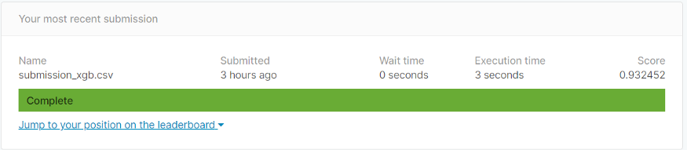

When I started working on Kaggle problems, I was stressed working on Kaggle Notebooks. Having worked in Spyder and Jupyter notebooks, I was not comfortable working in Kaggle. In the process of figuring out few utilities like increasing RAM, loading data through API, Use of GPU, etc, I found Colab solutions more readily available (perhaps it’s a Google thing!). I figured out a few simple tricks in Colab to make working with Colab easier and create a Kaggle ML pipeline to automate the process.
Google Colab is a free Jupyter/IPython notebook environment that requires no setup and runs entirely in the cloud.
How to get the Best out of Colab?
After creating a new Python Notebook, make sure to change the runtime type to GPU and you’ll be allocated ~12.72 GB RAM and NVIDIA Tesla P4 or NVIDIA Tesla K80 or NVIDIA Tesla P100 GPU ~7.1 GB as GPU. You can increase the memory allocation to ~25.51 GB RAM and GPU to ~ 16 GB by running the following command.
while(1):
d.append('1')
The above command tries to expand (thanks to ‘append’ command) RAM and crashes in the process. Click on the ‘get more ram’ after the crash of previous memory allocation. For more such tips, feel free to refer my previous blog.
!nvidia-smiKaggle Pipeline:
I’m considering the Kaggle IEEE-CIS Fraud Detection competition, I’ll now breakdown step by step of a typical Kaggle machine learning pipeline in colab.
1. Downloading the datasets from API calls:
First download your API token by going to your Kaggle My Account (https://www.kaggle.com/*Your-Username*/account), going to section ‘API’ and clicking on ‘create new API token’. You will now download a file called ‘kaggle.json’. You have to upload this file to your colab notebook.
uploaded = files.upload()
You can use the code given below to download and unzip the datasets.
!mkdir -p ~/.kaggle!cp kaggle.json ~/.kaggle/
!chmod 600 ~/.kaggle/kaggle.json
!kaggle competitions download --force ieee-fraud-detection
#Unzip the downloaded files
!unzip sample_submission.csv.zip
!unzip test_identity.csv.zip
!unzip test_transaction.csv.zip
!unzip train_identity.csv.zip
!unzip train_transaction.csv.zip
You can now get access to the datasets of size ~1.2 GB in most efficient way.
2. Pre-Processing and Data Wrangling:
Reading the datasets of this size will sometimes take a couple of minutes using pandas. To use the RAM and GPU provided effectively, we can use dask package to read these big datasets in less than a second!!
train_identity = dd.read_csv('train_identity.csv')
train_transaction = dd.read_csv('train_transaction.csv')
test_identity = dd.read_csv('test_identity.csv')
test_transaction = dd.read_csv('test_transaction.csv')
sub = dd.read_csv('sample_submission.csv')
# let's combine the data and work with the whole dataset
train = dd.merge(train_transaction, train_identity, on='TransactionID', how='left')
test = dd.merge(test_transaction, test_identity, on='TransactionID', how='left')
Coming to data wrangling, I followed up by changing the necessary data types and train and test data splitting. This can be done according to their style and comfort. You can go through the colab for my steps for data wrangling.
3. Feature Engineering and Feature Selection:
This can be done according to the type of datasets, taking freedom of creating new features and using feature selection techniques like Recursive Feature Elimination, BORUTA, Tree based feature selection, etc. I’ve used ‘sklearn feature_selection’ with the help of ‘SelectFromModel’ and using ‘XGBClassifier’ to do feature selection.
from xgboost import XGBClassifier
xgbc=XGBClassifier(n_estimators=500,verbose=1,tree_method='gpu_hist')
embeded_xgb_selector = SelectFromModel(xgbc)
embeded_xgb_selector.fit(xTrain_xgb, yTrain_xgb)
embeded_xgb_support = embeded_xgb_selector.get_support()
embeded_xgb_feature = xTrain_lgb.loc[:,embeded_lgb_support].columns.tolist()
final_tr= xTrain_xgb[embeded_xgb_feature]
4. Model building:I’ve used XGboost to fit the data, parameters are selected using hyperparameter techniques like gridsearchCV or randomsearchCV or Bayesian optimization, Will be including in a detailed version of these hyperparameter optimization techniques in further blogs.
import xgboost as xgb
model = xgb.XGBClassifier(
n_estimators=500,
max_depth=10,
learning_rate=0.01,
subsample=0.9,
colsample_bytree=0.9,
random_state=123,
tree_method='gpu_hist' )
xgb_best=model.fit(final_tr, yTrain)
5. Submission File:
After validating on the test data, further ‘submission data’ predictions of Kaggle can be added to the pipeline to make sure that the file is downloaded after the predictions.
ytest_xgb=xgb_best.predict_proba(final_ts)
submission_xgb= np.c_[test.TransactionID,ytest_xgb[:,1]]
submission_xgb= pd.DataFrame(submission_xgb)
submission_xgb.columns= ['TransactionID','isFraud']
print(submission_xgb)
submission_xgb.to_csv('submission_xgb.csv')
from google.colab import files
files.download('submission_xgb.csv')
Please check the detailed Kaggle pipeline from this colab, I’ve received a score of ~0.93 on the submission file with a minimal time of ~5 min to run the pipeline. we can then automate by changing the parameter grid and using different models like LightGBM, Catboost, Adaboost etc to improve the model.

PRO-TIP:
Adding to this if you’re worried if the colab could be disconnecting you can run a small following Javascript code going to the console by clicking Ctrl+ Shift + i in your browser.
function ClickConnect(){
console.log("Working");
document.querySelector("colab-toolbar-button#connect").click()
}setInterval(ClickConnect,60000)
Conclusion:
Working on large datasets provided in the Kaggle competitions could be a time-taking process. If we can effectively make use of google colab notebooks to create a pipeline, we can then make use of parallel computing libraries like dask and use GPU effectively to accelerate and automate the process of Data modeling.
References
1. XGBoost.
2. Kaggle IEEE-CIS Fraud Detection competition.
This article is originally published on medium publication Towards Datascience